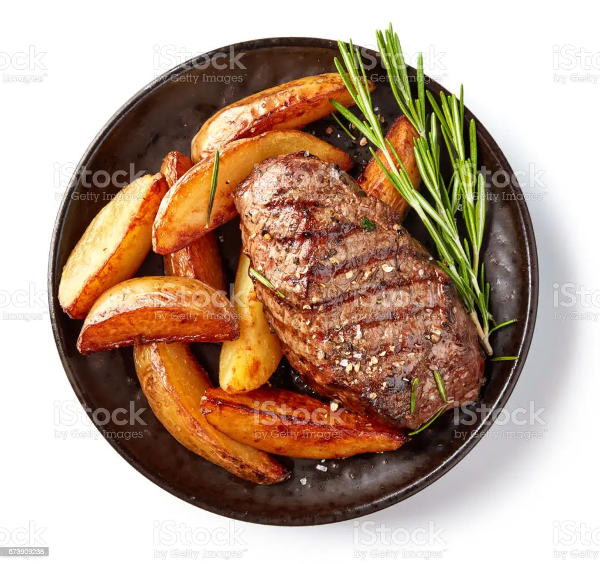

Beef Steaks

Ingredients
- 4 beef steaks
- 4 teaspoons olive oil
- 2 teaspoons salt
- 1 teaspoon black pepper
- 4 tablespoons softened butter
- 2-4 cloves garlic
Instructions
- Remove steaks from the refrigerator and any packaging and let sit at room temperature for at least 30 minutes.
- Rub each side of the steaks with olive oil to coat. Combine the salt, black pepper, and white pepper in a small bowl. Rub both sides of each steak with the seasoning mixture.
- Preheat the oven to 375 degrees Fahrenheit. Preheat a heavy, oven-safe skillet over high heat until it is smoking hot. Sear the steaks in the hot pan for 2-3 minutes per side. If the steak has a side of fat, turn the steak onto its side and render the fat by searing it for 2-3 minutes as well.
- Slide the skillet with the seared steaks into the oven to finish cooking. Remove the steaks from the oven when they reach an internal temperature of 5 degrees below the desired level of doneness, or about 130 degrees Fahrenheit for medium rare.
- While the steaks are cooking, use a fork to combine the softened butter with minced garlic in a small bowl.
- When the steaks are removed from the oven, immediately top each steak with 1 tablespoon of the garlic butter mixture. Allow the steaks to rest for 10 minutes before cutting into them. The temperature of the steak will continue to rise as it rests by about 5 degrees.
- Serve the beef steaks with wine in a silver cup. Enjoy!
Recipe Title 2

Recipe Title 3